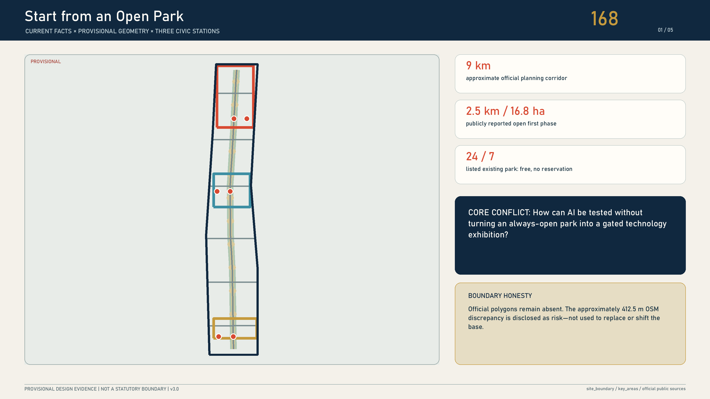
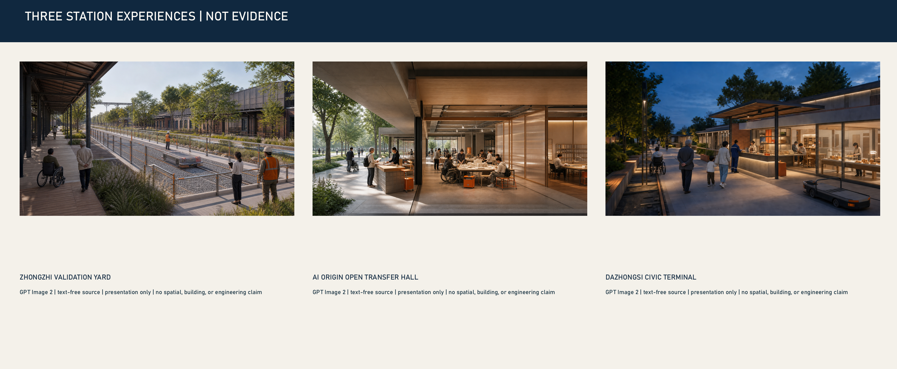
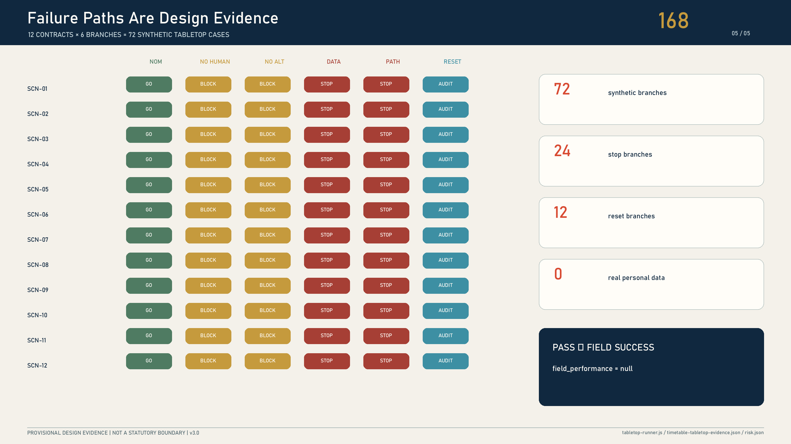

JINGZHANG 168 / v3.0 / PROVISIONAL
THE CIVIC TIMETABLE
The park stays open while AI arrives by timetable. Delays are visible, failures have a human conductor, and suspension never blocks the civic path.
9 kmapproximate official planning corridor
2.5 km / 16.8 hareported open first phase
24 / 7existing park: free, no reservation
72synthetic branches; field performance null

ONE CONSTITUTION
Layer 0 cannot close. Layer 1 AI services may pause, return, and be audited.
HUMANNON-AISTOPRESETThree civic stations, not three AI showrooms
01
Zhongzhi Validation Yard
Public edge—scheduled court—isolated back-house
02
AI Origin Open Transfer Hall
No-account counter—translation workshop—controlled room
03
Dazhongsi Civic Terminal
Always-open ground—staffed counter—synthetic sandbox


Review evidence locators
Overall map, key areas, mobility and walking, buildings, renewal projects, and sources resolve through these stable visible locators; compliance_matrix visual_sections use only these codes.
V3-BASELINE-CONTEXTCurrent park and unclosable civic baseV3-SPATIAL-SYSTEMSpine, three stations, six seams, seven componentsV3-STATION-PROTOTYPESThree differentiated civic-station sectionsV3-SERVICE-CONTRACTSTwelve stoppable service contractsV3-FIRST-168HNine stages in the first 168 hoursV3-TABLETOP-RECEIPTS72-branch synthetic tabletop receiptsV3-GOVERNANCE-RIGHTSSeparated powers and non-participant rightsV3-IMPLEMENTATION-GATESProject-maturity and scenario-admission gatesV3-METRIC-BOUNDARYContract coverage separated from field performanceV3-RISK-REGISTEREight risks, triggers, and human reviewV3-HERITAGE-PUBLIC-SPACEJingzhang history, public space, and all-day accessV3-SOURCE-RIGHTSSources, rights, and generation boundary